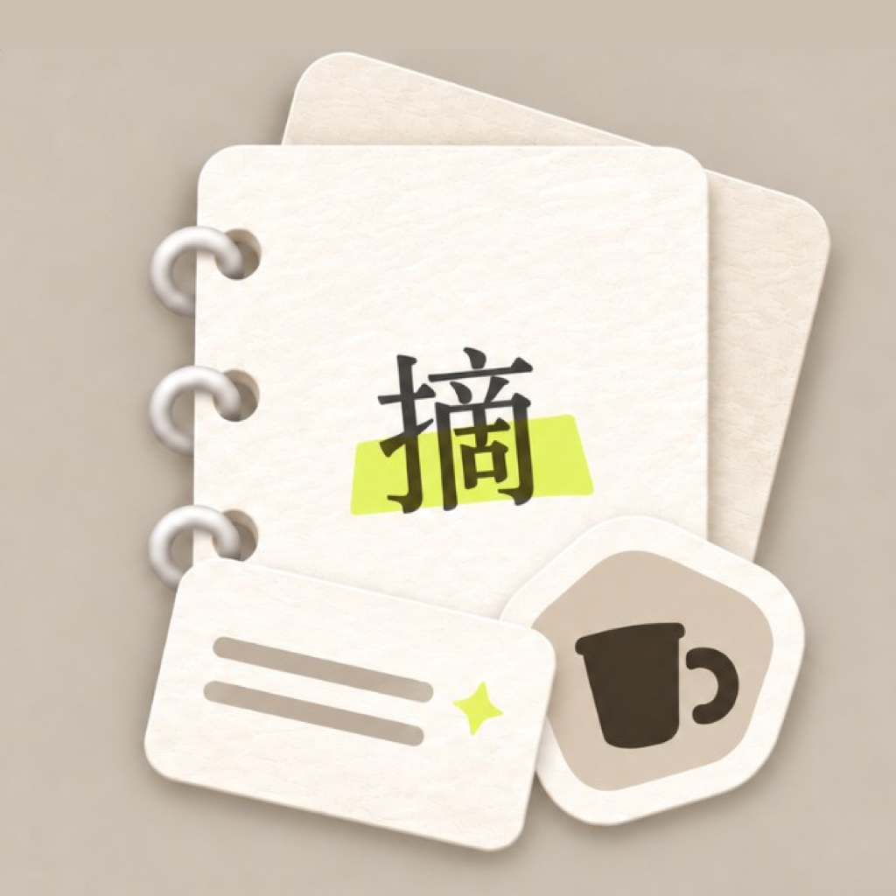

espresso
浓缩咖啡

摘词本 Lexclip不用打开词典再打字。拍张照、截个屏，点一下照片里的词就行。词会带着当时的照片、句子和贴纸，留在你自己的本子里。
Speed为什么快
以前大概是：截图，打开词典，一个字母一个字母敲，再选意思，还要想怎么背。摘词本把中间几步砍掉——字在手机上就认完了，你直接点照片里的词；东西可以抠成贴纸；保存后词会飞回日记。不是功能堆得更多，是从「看见」到「留下」更短。
Loop一条闭环
菜单、路牌、字幕、包装、书页——外面碰到的英文，都可以摘。
继续往下划，视频会跟着走
Entries从哪开始摘
读到一半可以按 Action Button；锁屏侧边有相机控制；控制中心也能一键打开相机；相册里已有的截图也能丢进来。首页继续往下拉，相机就像抽屉一样被拉出来——不是盖一层浮窗。
在摘词首页再往下拉一点，松手就打开。拍照、选相册都在这块暗房里完成；拍完直接进互动照片。
绑好截屏快捷指令后，正在看的内容会进本机收件箱，打开 App 就是互动照片。字幕、网页、电子书都挺合适。
从系统这边进来，一打开就是相机展开的样子，少绕几步，尽快到快门。
用系统相册选一张就行，App 不会去翻你整本相册。路牌、菜单、包装事后整理也方便。
On device先在手机上认完
原图先存到本机，再同时认字、认前景。互动照片不是新开一页，就叠在取景窗里：词上有淡淡荧光笔底，点得着；物体平时只有细轮廓，点中了才抠出来。万一没认好，照片还在，可以就地再试一次。
打开详情看音标、意思、原句和搭配。主按钮就一个：保存这次语境。存好后，词会带着贴纸飞向「摘词」。
贴纸都是从你原图抠的，不会拿生成图凑数。名字可以选，也可以自己改，存进日记和分类。
整张照片收进胶囊，给你按原文排好的词、中英概括，还能接着问。本机认字是底，云端 AI 是可选的加强。
Context带着语境记
这不是一本通用词典，也不是干背单词。特别的地方在于「这次遇见」：来源照片、原句、抠出来的贴纸。同一个词再摘一次，会多一行日记，不会把旧的盖掉。复习翻到背面，看到的还是同一套详情。
按天长成日记。今天那一页会贴条和纸胶带；日期用大号衬线；贴纸左右交替，轻轻歪一点，像贴在本子上。
荧光笔只用来标。标这个词、标当前意思、标已经存过。不当按钮底色，也不整块铺开。
出错也能接着弄。识别、查词、保存或同步没成时，照片和已经选的词还在，页面上会说明下一步。
Study拆词和追问
查单个词、听发音、按日程复习，本机词典就够用。真想搞清「这张图在说什么」、要场景说法或例句时，再点「拆词」才会走云端。结果写在描图纸上的纸条里，不是聊天气泡：左边是 AI 批注，右边是你的问题。推荐问题点一下就流式回答，也可以自己接着问。句子和重点词能存进词本，首页日记会出现整句英文和中文。
只有你主动拆词，或开了对应云端能力并真正用到时，才会按请求发压缩图或文字。本机认字和词典不靠云端 AI。
AI 不直接写进词本。词和句子校验过后，要你点保存才会留下并同步；分类也只沿用已有的，不会自己乱建。
登录时可以单独选要不要云端 AI。额度用完或失败，就在当前页说明，还能重试，不会把你踹回起点。
Review复习
复习首页有三块：今天该复习几个、日历上哪天练得多、新词 / 记忆中 / 已掌握各多少。开始后是四选一；选对继续，选错或点「不认识」就翻开详情——和日记里点开是同一套。间隔是 1、2、4、7、15、30 天；连着记得够多次就算掌握；忘了退两级，明天再练。想多练一轮可以用练习模式，不写进正式排期。
Craft长什么样
不是仪表盘那种界面。暖色纸、纸纹、撕边、荧光笔、铅笔下划线、和纸胶带、描图纸详情——英文和标题用衬线，中文正文用系统字体。一页里通常只有一个实心主按钮。动效也尽量有说法：下拉开相机、词飞向 Tab、贴纸弹出来、复习翻面；开了减弱动态效果就改成清楚的淡入，反馈还在。
荧光笔有五种颜色可选，只改标注色，不改纸和字的阅读关系。深色模式还是同一本手账，只是暗下来；相机那边一直像暗房。
Keep local什么在手机上，什么会同步
原图和完整摘词历史不跟着账户上传。存下来的单词、释义、原句、分类、复习进度，还有贴纸抠图，登录后可以进词本同步。云端 AI 是单独勾选的。法律说明和支持页之后再补，这里先把产品边界说清楚。
适合在现实里老碰到英文的人：菜单、字幕、包装、工作文档。这一页往下滑就能看完主要用法。现在还在 TestFlight 测试；装上之后，从第一次下拉或一次截屏开始就行。
有问题可以发邮件到 support@lexclip.top